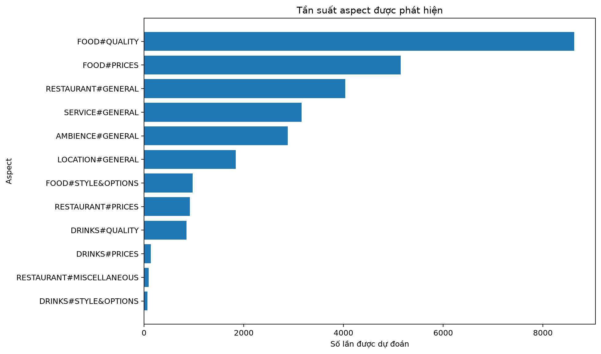
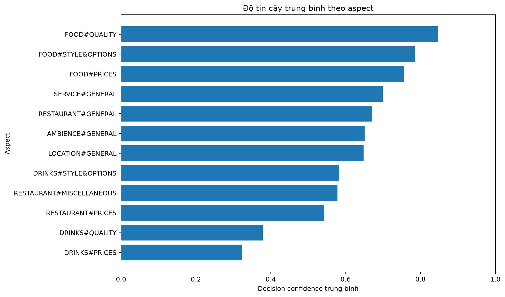
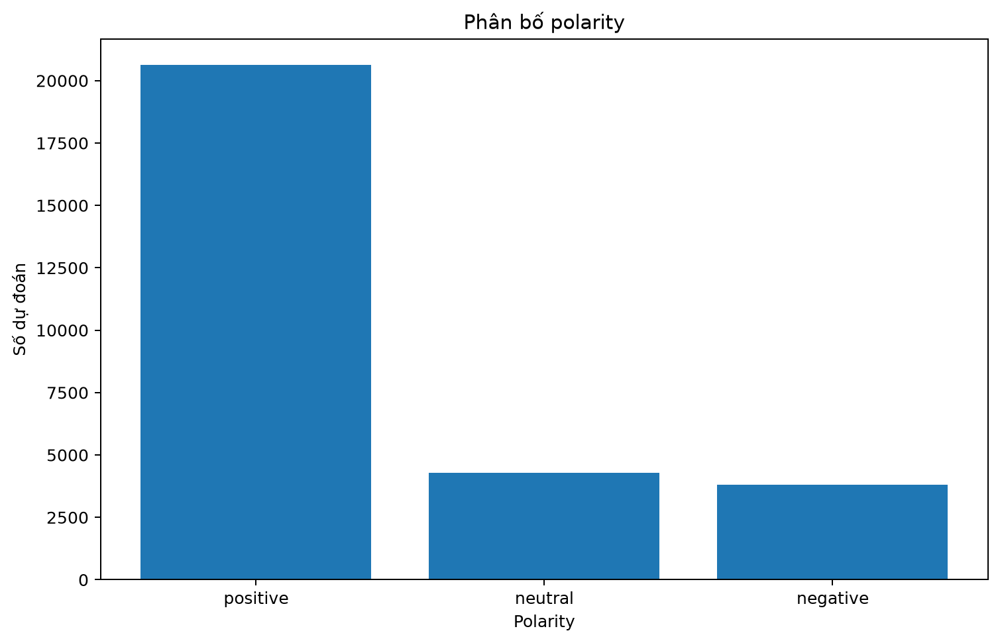
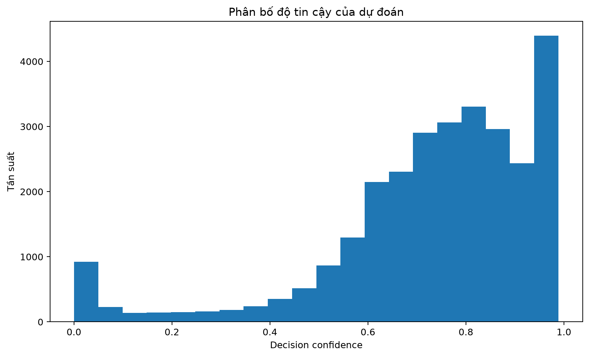
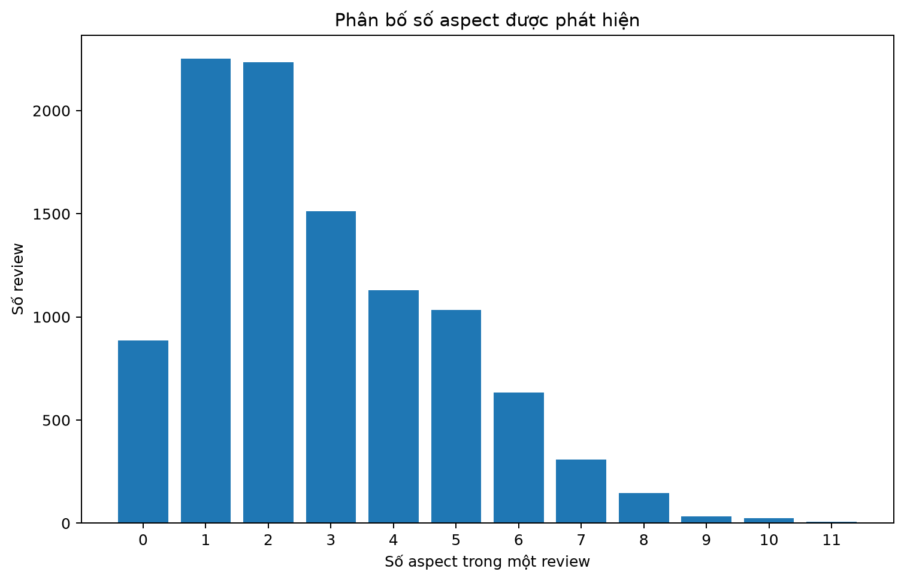

Dataset: C:\Users\ADMIN\Downloads\Food_Review_NLP\tests\raw\vsa_food_rv_test.csv
| Aspect | Số lần | Tỷ lệ/review | Presence TB | Polarity TB | Decision TB | Tỷ lệ thấp |
|---|---|---|---|---|---|---|
| FOOD#QUALITY | 8626 | 0.8452 | 0.9477 | 0.8771 | 0.8470 | 0.1018 |
| FOOD#PRICES | 5150 | 0.5046 | 0.8368 | 0.8519 | 0.7554 | 0.1289 |
| RESTAURANT#GENERAL | 4034 | 0.3953 | 0.6800 | 0.9312 | 0.6715 | 0.1232 |
| SERVICE#GENERAL | 3160 | 0.3096 | 0.7688 | 0.8374 | 0.6990 | 0.1684 |
| AMBIENCE#GENERAL | 2881 | 0.2823 | 0.7794 | 0.7553 | 0.6507 | 0.2676 |
| LOCATION#GENERAL | 1840 | 0.1803 | 0.7305 | 0.7418 | 0.6479 | 0.2495 |
| FOOD#STYLE&OPTIONS | 973 | 0.0953 | 0.8391 | 0.8801 | 0.7856 | 0.0987 |
| RESTAURANT#PRICES | 920 | 0.0901 | 0.5914 | 0.8168 | 0.5424 | 0.5652 |
| DRINKS#QUALITY | 852 | 0.0835 | 0.4229 | 0.7511 | 0.3787 | 0.9366 |
| DRINKS#PRICES | 136 | 0.0133 | 0.4177 | 0.6691 | 0.3230 | 1.0000 |
| RESTAURANT#MISCELLANEOUS | 90 | 0.0088 | 0.6233 | 0.7626 | 0.5781 | 0.6444 |
| DRINKS#STYLE&OPTIONS | 68 | 0.0067 | 0.5872 | 0.9213 | 0.5820 | 0.7647 |
| Polarity | Số lần | Tỷ lệ | Decision TB |
|---|---|---|---|
| positive | 20639 | 0.7184 | 0.7581 |
| neutral | 4295 | 0.1495 | 0.7381 |
| negative | 3796 | 0.1321 | 0.5495 |




